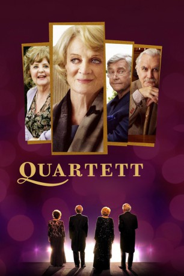

#5000 Quartett
Alternativ: Quartet
 
 IMDB-Wertung: 6.8 / 10
IMDB-Wertung: 6.8 / 10  Metascore: 0
Metascore: 0 
Cecily, Reginald und Wilfred leben in einer Residenz für ehemalige Opernsänger. Am 10. Oktober findet wie jedes Jahr ein Konzert zu Ehren Verdis Geburtstag statt. Die Ankunft von Opernstar Jean (Maggie Smith), die einst mit Reggie verheiratet war, mischt das Quartett ordentlich auf. Sie mimt noch immer die große Diva und weigert sich beim geplanten Comeback, aufzutreten. Trotz allem kommt das sehnsüchtig erwartete, einmalige Konzert immer näher und ohne sie können Cecil, Wilf und Reggie nicht auftreten...
Jahr: 2012
Dauer: 98 Minuten
FSK: 0
Land: England Studio: DCM Film DistributionTonspuren: DTS - ,
Untertitel: Deutsch,
Auflösung: 1080p (1920x816) Größe: 6799 MB
Genre: Drama, Komödie
Regisseur:  Dustin Hoffman
Dustin Hoffman
Drehbuch: William Hjortsberg
Soundtrack:
Darsteller:
 Maggie Smith als Jean Horton
Maggie Smith als Jean Horton Tom Courtenay als Reginald Paget
Tom Courtenay als Reginald Paget Billy Connolly als Wilf Bond
Billy Connolly als Wilf Bond- Pauline Collins als Cissy Robson
 Michael Gambon als Cedric Livingston
Michael Gambon als Cedric Livingston Sheridan Smith als Dr. Lucy Cogan
Sheridan Smith als Dr. Lucy Cogan Andrew Sachs als Bobby Swanson
Andrew Sachs als Bobby Swanson- Trevor Peacock als George
 David Ryall als Harry
David Ryall als Harry Michael Byrne als Frank White
Michael Byrne als Frank White- Ronnie Fox als Nobby
 Eline Powell als Angelique
Eline Powell als Angelique- Luke Newberry als Simon
 Shola Adewusi als Sheryl
Shola Adewusi als Sheryl Jumayn Hunter als Joey
Jumayn Hunter als Joey Sarah Crowden als Felicity Liddle
Sarah Crowden als Felicity Liddle- John Rawnsley als Nigel
- Morrison Thomas als Resident
- Kent Olesen als Lars , uncredited
- Gwyneth Jones als Anne Langley
- Patricia Loveland als Letitia Davis
- Aleksandra Duczmal als Marta
- Denis Khoroshko als Tadek
- Colin Bradbury als Olly Fisher
- Patricia Varley als Octavia
- Ronnie Hughes als Tony Rose
- Jack Honeyborne als Dave Trubeck
- Nuala Willis als Norma McIntyre
- Melodie Waddingham als Marion Reed
- Cynthia Morey als Lottie Yates
- John Heley als Leo Cassell
- Graeme Scott als Fred
- John Georgiadis als Bill
- Ita Herbert als Regina
- Ania Duczmal als Eva
- Cyril Davey als Flat piano Resident
- Esme Penry-Davey als Young Pianist
- Virginia Bradbury als Daisy
- Isla Mathieson als Young Violinist Isla
- Iona Mathieson als Young Violinist Iona
- Claudia Mellor als Lady Gaga Girl
- Penelope Zagoul als Cleaner
- Helen Bradbury als Daisy's Mother
- Jennifer Spillane als Waltzing Neurologist
- Catherine Wilson als Resident
- David Christian als Resident
- Rashid Karapiet als Resident
- Arthur Nightingale als Resident
- Vass Anderson als Resident
- Desmond Longfield als Resident
Datei: X:\2012(N-Z)\Quartett (2012, FSK0, 1920x816).mkv seit 07.12.2016
Festplatte: HD 2012(N-Z)-2013(A-H)
 Es gibt insgesamt 138 Filme in der Gruppe '2012(N-Z)'
Es gibt insgesamt 138 Filme in der Gruppe '2012(N-Z)'